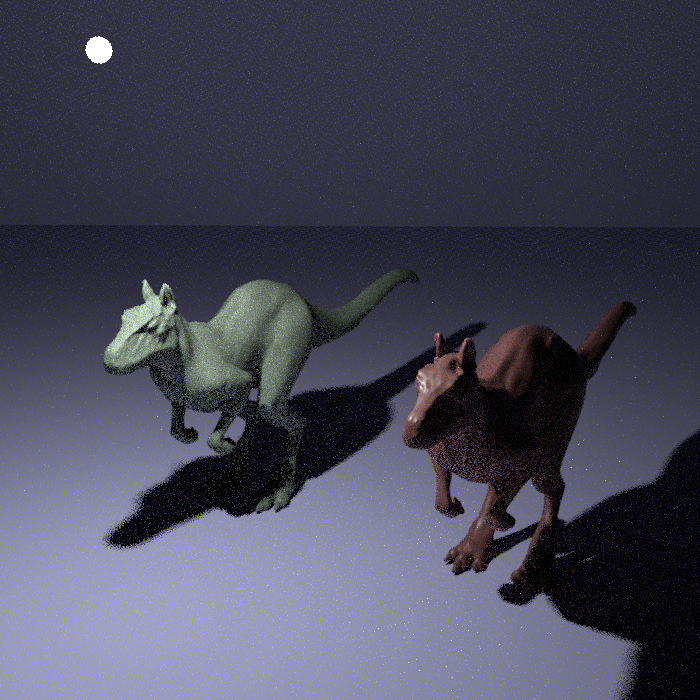
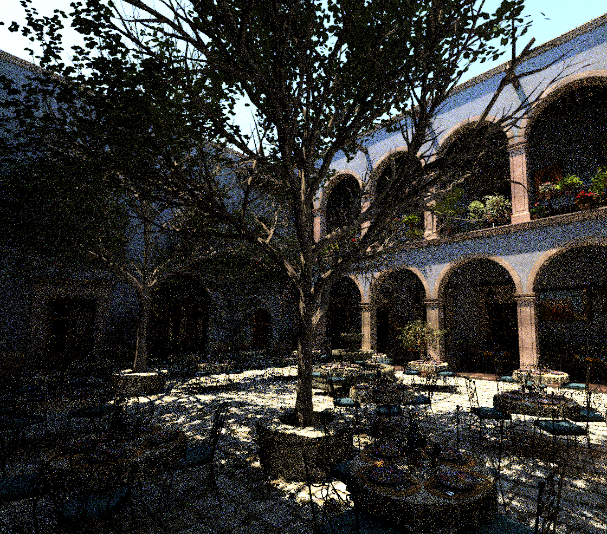

Project 2: Uniform Grid Accelerator
CSIE5098 Digital Image Synthesis — Implementation & Performance Analysis
1. Overview
This project implements a uniform grid acceleration structure in pbrt-v4,
porting the algorithm from pbrt-v2's GridAccel. The grid was removed after
pbrt-v3 due to inferior performance compared to BVH and KD-Tree on complex scenes.
The goal is to understand pbrt-v4's accelerator architecture and evaluate the performance
trade-offs through benchmarking on multiple scenes.
2. Implementation
Files Modified / Added
| File | Change |
|---|---|
src/pbrt/cpu/grid.h | New — GridAggregate class declaration |
src/pbrt/cpu/grid.cpp | New — GridAggregate implementation |
src/pbrt/cpu/primitive.h | Added GridAggregate to TaggedPointer type list |
src/pbrt/cpu/primitive.cpp | Added #include <pbrt/cpu/grid.h> |
src/pbrt/cpu/aggregates.cpp | Added #include and "grid" case in CreateAccelerator |
CMakeLists.txt | Added src/pbrt/cpu/grid.cpp to build |
2.1 Grid Construction
The constructor computes the scene bounds, determines grid resolution, allocates voxels, and inserts each primitive into all overlapping voxels.
// Resolution: target ~8 * cbrt(N) voxels total, distributed proportionally
Float cubeRoot = 3.f * std::cbrt((Float)nPrims);
Float voxelsPerUnit = cubeRoot / MaxComponentValue(delta);
for (int axis = 0; axis < 3; ++axis) {
nVoxels[axis] = Clamp((int)std::round(delta[axis] * voxelsPerUnit), 1, 64);
width[axis] = delta[axis] / nVoxels[axis];
invWidth[axis] = (width[axis] == 0) ? 0.f : 1.f / width[axis];
}
// Insert each primitive into overlapping voxels
for (int i = 0; i < primitives.size(); ++i) {
Bounds3f pb = primitives[i].Bounds();
int vmin[3], vmax[3];
for (int axis = 0; axis < 3; ++axis) {
vmin[axis] = posToVoxel(pb.pMin, axis);
vmax[axis] = posToVoxel(pb.pMax, axis);
}
for (int z = vmin[2]; z <= vmax[2]; ++z)
for (int y = vmin[1]; y <= vmax[1]; ++y)
for (int x = vmin[0]; x <= vmax[0]; ++x)
voxels[offset(x, y, z)].push_back(i);
}2.2 Ray Traversal — 3D DDA
Ray intersection uses the 3D DDA algorithm from pbrt-v2. The algorithm initializes
per-axis step sizes and next-crossing distances, then iteratively advances to the
next voxel along the axis with the smallest nextCrossingT.
// Initialize DDA state for each axis
for (int axis = 0; axis < 3; ++axis) {
Point3f pHit = ray.o + t0 * ray.d;
pos[axis] = posToVoxel(pHit, axis);
if (ray.d[axis] >= 0) {
deltaT[axis] = width[axis] / ray.d[axis];
nextCrossingT[axis] = t0 + (voxelToPos(pos[axis]+1, axis) - pHit[axis]) / ray.d[axis];
step[axis] = 1; out[axis] = nVoxels[axis];
} else {
deltaT[axis] = -width[axis] / ray.d[axis];
nextCrossingT[axis] = t0 + (voxelToPos(pos[axis], axis) - pHit[axis]) / ray.d[axis];
step[axis] = -1; out[axis] = -1;
}
}
// Walk through voxels, testing primitives and advancing DDA
while (true) {
// Test all primitives in current voxel
for (int idx : voxels[offset(pos[0], pos[1], pos[2])]) {
auto si = primitives[idx].Intersect(ray, tMax);
if (si) { isect = si; tMax = si->tHit; }
}
// Advance to next voxel along axis with smallest nextCrossingT
int stepAxis = (nextCrossingT[0] < nextCrossingT[1])
? ((nextCrossingT[0] < nextCrossingT[2]) ? 0 : 2)
: ((nextCrossingT[1] < nextCrossingT[2]) ? 1 : 2);
if (nextCrossingT[stepAxis] > tMax) break;
pos[stepAxis] += step[stepAxis];
if (pos[stepAxis] == out[stepAxis]) break;
nextCrossingT[stepAxis] += deltaT[stepAxis];
}2.3 Registering the Accelerator
GridAggregate was registered in pbrt-v4's Primitive
tagged pointer and the CreateAccelerator factory:
// primitive.h — add to TaggedPointer type list
class GridAggregate;
...
: public TaggedPointer<SimplePrimitive, GeometricPrimitive, TransformedPrimitive,
AnimatedPrimitive, BVHAggregate, KdTreeAggregate, GridAggregate>
// aggregates.cpp — add "grid" case
else if (name == "grid")
accel = GridAggregate::Create(std::move(prims), parameters);The accelerator is selected in a scene file with:
Accelerator "grid"3. Performance Benchmark
Three scenes of increasing complexity were rendered with each accelerator at 4 samples
per pixel. Timings are wall-clock time measured with bash time.
The rendering time is reported by pbrt's progress bar. Construction time is computed
as total time minus rendering time.
Test Environment
| Property | Value |
|---|---|
| Server | TO-sv-td-h200node04 |
| CPU | Multi-core server CPU (8 threads used) |
| pbrt version | 4 (built Mar 8 2026) |
| Samples per pixel | 4 (--spp 4) |
Scene 1 — Killeroos (Simple)
~65,000 primitives. A single killeroo mesh with simple materials.
| Accelerator | Construction (s) | Rendering (s) | Total (s) |
|---|---|---|---|
| BVH | 0.36 | 0.10 | 0.46 |
| KD-Tree | 0.40 | 0.20 | 0.60 |
| Grid | 0.28 | 3.40 | 3.68 |
Scene 2 — Landscape (Medium/Complex)
~27,000,000 primitives. Dense outdoor environment with terrain and vegetation.
| Accelerator | Construction (s) | Rendering (s) | Total (s) |
|---|---|---|---|
| BVH | 7.35 | 5.40 | 12.75 |
| KD-Tree | 45.13 | 10.50 | 55.63 |
| Grid | 6.84 | 123.20 | 130.04 |
Scene 3 — San Miguel (Complex)
~2,500,000 primitives. Complex architectural scene with many objects and materials.
| Accelerator | Construction (s) | Rendering (s) | Total (s) |
|---|---|---|---|
| BVH | 2.85 | 0.30 | 3.15 |
| KD-Tree | 9.66 | 0.40 | 10.06 |
| Grid | 1.89 | 18.80 | 20.69 |
Rendering Time Comparison (bar chart)
Analysis
The results confirm the known trade-offs of each structure:
- BVH is the best overall performer — fast to build (SAH splits are efficient) and fastest to render across all scenes. It handles both uniform and non-uniform primitive distributions well.
- KD-Tree has acceptable render times but builds very slowly on large scenes (45s on Landscape vs 7s for BVH). The recursive splitting with surface area heuristic is expensive to construct.
- Grid builds fastest of all three on large scenes (6.8s on Landscape), but render times are dramatically worse — up to 22× slower than BVH. The root cause is primitive distribution: the Landscape scene has densely clustered geometry (e.g., trees, grass) that overwhelms many voxels, causing the DDA traversal to test far more primitives per ray than BVH's hierarchical culling would.
4. Rendered Images
All three accelerators produce identical output — the images below confirm correctness. Rendered at 4 spp for benchmarking speed.
Scene 1 — Killeroos

Total: 0.46s

Total: 0.60s

Total: 3.68s
Scene 2 — Landscape

Total: 12.75s

Total: 55.63s

Total: 130.04s
Scene 3 — San Miguel
Total: 3.15s
Total: 10.06s

Total: 20.69s
5. Conclusion
The uniform grid accelerator was successfully implemented in pbrt-v4 by porting the
3D DDA algorithm from pbrt-v2. The implementation required registering the new class
in pbrt-v4's TaggedPointer-based dispatch system and the
CreateAccelerator factory.
Performance results confirm why the grid was removed from pbrt after v2: BVH outperforms it in rendering speed by 22–34× on complex scenes, while remaining competitive in construction time. The grid's only advantage is fast construction on large scenes — faster than KD-Tree but still slower than BVH overall.
The grid's fundamental weakness is its inability to adapt to non-uniform primitive distributions. Scenes like Landscape, with highly clustered geometry, expose the worst case. A 2-level grid (bonus) would partially address this by using a coarse grid of fine grids, providing some spatial adaptivity while retaining the DDA simplicity.